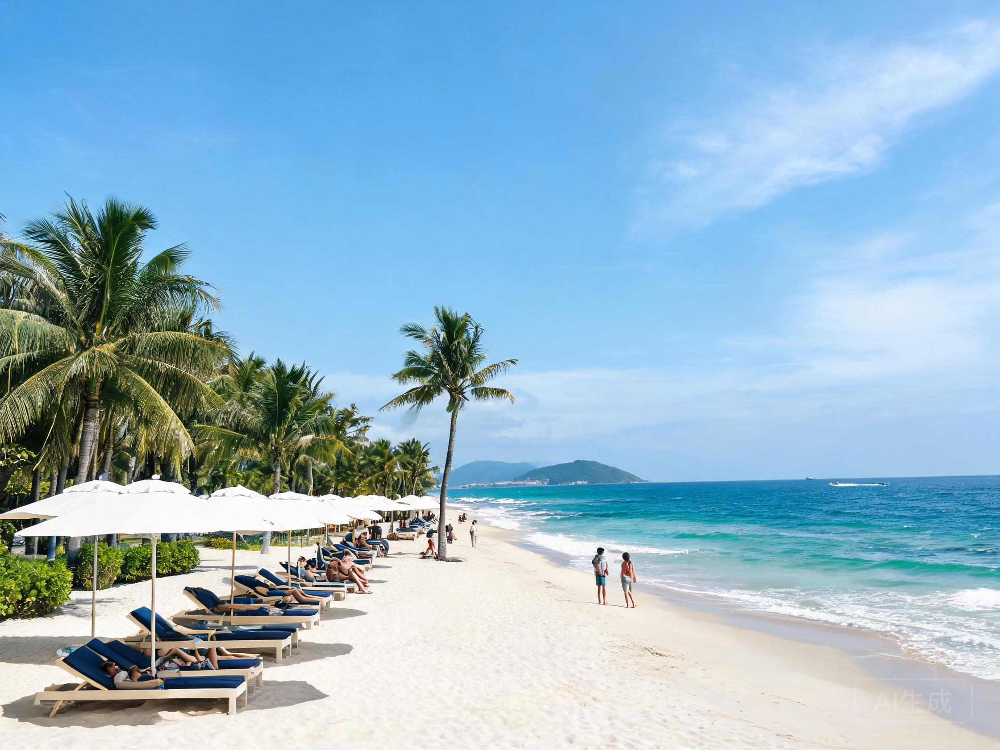
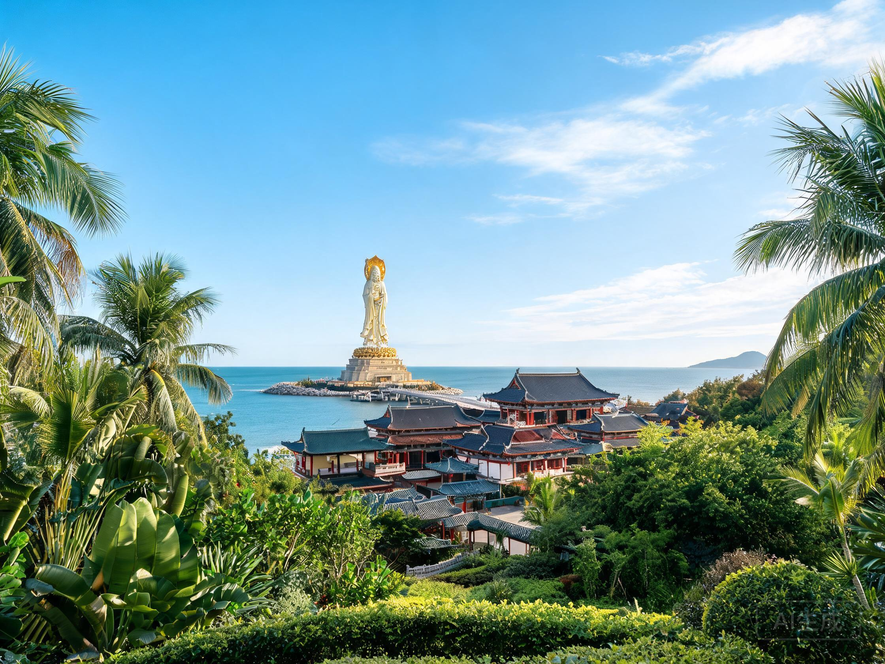
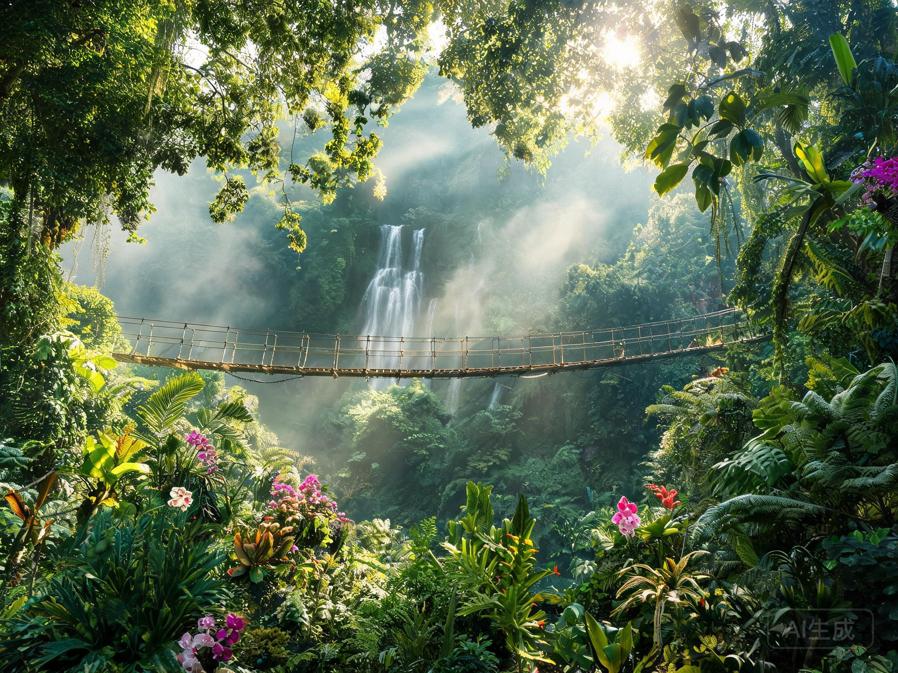

Отдых на Хайнане уже давно стал излюбленным направлением для российских туристов. Тропический остров на юге Китая круглый год радует теплом, чистым морем и уникальной природой. В этом гиде мы расскажем, что посмотреть на Хайнане, где находятся лучшие пляжи Саньи, какая погода ждёт вас в разные месяцы, как работает безвизовый режим Хайнань, нужна ли виза на Хайнане для россиян и сколько стоит отдых на Хайнане в 2025 году.
Пляжи Хайнаня и лучшие пляжи Саньи
Главное богатство острова — это, конечно, пляжи Хайнаня. Мягкий белый песок, прозрачная бирюзовая вода и пологий вход в море делают отдых на Хайнане комфортным для семей с детьми и для тех, кто просто любит нежиться у воды.

Пляж Ялунвань — один из лучших пляжей Саньи
Если говорить о лучших пляжах Саньи, то в первую очередь стоит выделить несколько бухт:
- Ялунвань (Yalong Bay) — считается самой элитной и живописной бухтой. Полоса белого песка длиной более 7 км, чистейшая вода и развитая инфраструктура отелей. Идеальный выбор для размеренного пляжного отдыха в Санье.
- Дадунхай (Dadonghai) — популярная бухта рядом с центром города. Здесь много кафе, баров и водных развлечений. Отлично подходит для молодёжи и активных туристов.
- Санья Бэй (Sanya Bay) — самая протяжённая бухта с 20-километровой набережной. Пляж широкий, малолюдный в утренние часы, красиво встречать закаты.
- Хайтанг Бэй (Haitang Bay) — новая курортная зона с фешенебельными отелями и аквапарком «Атлантис». Подходит для тех, кто ищет уединённый и престижный отдых на Хайнане.
Когда купаться на пляжах Хайнаня?
Температура воды в море держится в районе +24…+28 °C круглый год, поэтому купаться можно в любой сезон. Пик комфорта приходится на ноябрь — апрель, когда стоит сухая и солнечная погода. Летом (июнь — сентябрь) возможны кратковременные дожди и штормы, но море остаётся тёплым.
Достопримечательности: что посмотреть на Хайнане
Отдых на Хайнане — это не только пляжи. Остров насыщен уникальными природными и культурными объектами. Ниже — главные места, что посмотреть на Хайнане обязательно стоит каждому туристу.
1. Буддийский центр «Наньшань»

Буддийский центр Наньшань — одна из главных достопримечательностей Хайнаня
Один из крупнейших буддийских комплексов Азии и обязательный пункт программы «что посмотреть на Хайнане». На территории расположены храмы, тропические сады, пруды с карпами и знаменитая статуя Гуаньинь высотой 108 метров, стоящая прямо в море. На прогулку по комплексу лучше выделить целый день. Входной билет стоит около 130–150 юаней, для пенсионеров старше 60 лет — скидка.
2. Тропический парк «Янода»

Тропический парк Янода — настоящие джунгли на Хайнане
Национальный парк на склоне горы, покрытый тропическими джунглями, ущельями и водопадами. Главная изюминка — стеклянный мост, по которому смело могут пройти только самые отважные: под ногами слышен треск стекла. Парк подходит для любителей природы и активного отдыха в Санье и окрестностях.
3. Парк «Край света» (Тянья-хайцзяо)
Легендарный парк на берегу моря с причудливыми валунами, на которых высечены иероглифы. Для китайцев это место символизирует «конец света». Здесь можно погулять по песчаному пляжу, посетить морской зоопарк и этнодеревню. Отличный вариант для тех, кто ищет, что посмотреть на Хайнане в окрестностях Саньи.
4. Парк «Олень повернул голову»
Обзорная площадка на холме с панорамным видом на весь город Санью и остров Феникс. Рекомендуем приезжать сюда на закате, чтобы полюбоваться огнями ночного города и световым шоу на «домах-деревьях». Вход бесплатный, проезд на экомобиле к вершине — 25 юаней.
5. Аквапарк и океанариум «Атлантис»
Огромный развлекательный комплекс в Хайтанг Бэе. Двухэтажный океанариум с акулами, белухами и скатами, а также аквапарк, входящий в топ-10 лучших в мире. Отличное место для семейного отдыха на Хайнане, особенно если вы путешествуете с детьми.
Погода на Хайнане по месяцам: когда лучше ехать
Погода на Хайнане относится к тропическому муссонному климату. Здесь нет резких перепадов температур, и солнце светит почти круглый год. Разберёмся, чего ожидать в каждый сезон.
| Месяц | Температура воздуха | Температура моря | Особенности |
|---|---|---|---|
| Дек — Фев | +20…+26 °C | +22…+24 °C | Высокий сезон, сухо и солнечно |
| Мар — Май | +25…+32 °C | +26…+28 °C | Идеальная погода на Хайнане |
| Июн — Сен | +28…+34 °C | +28…+30 °C | Дождливый сезон, возможны штормы |
| Окт — Ноя | +24…+30 °C | +26…+28 °C | Конец дождей, бархатный сезон |
Лучшее время для отдыха в Санье: ноябрь — апрель. В эти месяцы погода на Хайнане наиболее комфортная: нет изнуряющей жары и обильных дождей, море тёплое и спокойное. Если вы хотите сэкономить, можно приехать в мае или октябре — цены ниже, а погода ещё хорошая.
Безвизовый режим Хайнань и виза на Хайнане для россиян
Безвизовый режим Хайнань позволяет находиться на территории острова до 30 дней. Для этого необходимо:
- Прибыть в Санью прямым рейсом или через транзитные города Китая;
- Иметь заграничный паспорт, действующий не менее 6 месяцев со дня въезда;
- Забронировать отель и обратный билет;
- Подать заявление на безвизовый въезд через турагентство или самостоятельно при посадке на рейс.
Если вы планируете путешествовать по материковому Китаю до или после отдыха на Хайнане, то в этом случае виза на Хайнане для россиян понадобится — оформляйте обычную китайскую туристическую визу в консульстве. При поездке только на остров виза не нужна.
Цены на Хайнане: сколько стоит отдых на Хайнане
Многих туристов волнует вопрос, сколько стоит отдых на Хайнане. Цены на Хайнане зависят от сезона, уровня отеля и ваших предпочтений. Ниже — ориентировочный бюджет на двоих человек на 10 дней отдыха в Санье.
| Статья расходов | Цена (примерно) |
|---|---|
| Авиабилет Москва — Санья (туда-обратно, чел.) | от 35 000 руб. |
| Отель 3 звезды (за ночь) | 2 000 — 4 000 руб. |
| Отель 5 звёзд на первой линии (за ночь) | 6 000 — 15 000 руб. |
| Питание в кафе (день на чел.) | 500 — 1 500 руб. |
| Экскурсии и входные билеты | от 800 руб. за объект |
| Транспорт (автобус/такси) | 50 — 500 руб. за поездку |
Цены на Хайнане в высокий сезон (декабрь — февраль) заметно выше, чем летом. Если хотите сэкономить, приезжайте в мае, июне или сентябре — отели предлагают скидки до 40%, а погода на Хайнане в эти месяцы ещё позволяет наслаждаться пляжем.
Отдых в Санье: практические советы
Санья — главный курортный город острова, и именно сюда чаще всего прилетают туристы. Чтобы отдых в Санье прошёл максимально комфортно, воспользуйтесь нашими советами:
- Выбирайте бухту под свои нужды: Ялунвань для спокойного отдыха, Дадунхай для активного, Санья Бэй для бюджетного, Хайтанг Бэй для роскошного.
- Транспорт: в Санье удобно ездить на автобусах (оплата наличными или картой). Такси доступно через приложения Didi, но на Хайнане лучше заранее договориться о цене.
- Деньги: берите с собой юани наличными или банковскую карту UnionPay. Карты Visa/MasterCard принимают не везде.
- Язык: английский знают в основном в крупных отелях. Установите офлайн-переводчик — он сильно облегчит общение.
- Экскурсии: что посмотреть на Хайнане проще всего с организованной экскурсией, но самостоятельные поездки на автобусе обходятся дешевле.
- Безопасность: остров считается безопасным, но не оставляйте вещи без присмотра на пляже и берегитесь от мошенников при обмене валюты.
Хотите получать актуальные советы по отдыху на Хайнане, узнавать о горящих путёвках и делиться впечатлениями с другими туристами? Присоединяйтесь к нашему Telegram-чату!
Присоединиться к нашему Telegram-чату